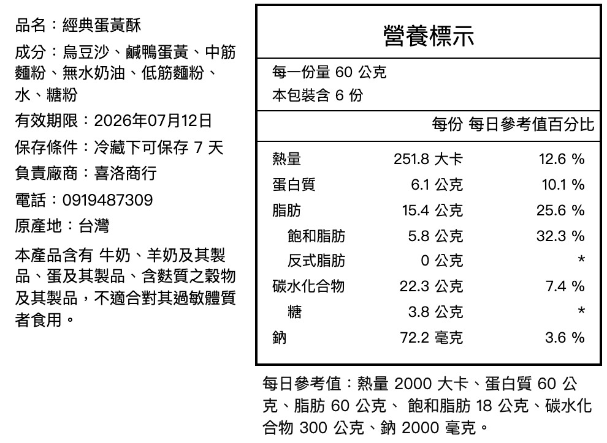

什麼是食品營養標示計算工具？
當你已經有產品配方與原料資料時，食品營養標示計算工具可以協助你把重量、比例與營養數據換算成可檢查的標示初版。
不論你是第一次做食品標示，或正在整理新配方，先了解計算工具、配方換算與送檢需求，會更容易判斷下一步。
當你已經有產品配方與原料資料時，食品營養標示計算工具可以協助你把重量、比例與營養數據換算成可檢查的標示初版。
你輸入每項原料重量與營養數據後，NutriTag 會依配方比例試算熱量、蛋白質、脂肪、碳水化合物、鈉等常見營養項目。
NutriTag 適合先用來整理配方試算、標示初版與內部確認；如果產品有特殊宣稱、高風險製程或通路要求，仍建議搭配檢驗或專業確認。
先把實際配方輸入 NutriTag，之後每次修改原料比例，就能快速重新試算並預覽標示結果，讓研發、包裝與上架前確認更有效率。
配方、總重、每份重量、營養成分與標示格式分散在不同檔案裡，越改越容易出現版本落差。
原料與營養數據集中管理，調整重量後即可重新計算，快速確認新版營養標示。
Excel 公式、單位換算、四捨五入與設計稿版本都需要人工反覆檢查。
系統將試算結果整理成台灣常見營養標示格式，Pro 可輸出圖片，方便設計與內部確認。
不用從空白 Excel 開始整理。建立產品、輸入原料重量，NutriTag 就能協助你試算營養成分並預覽標示結果。
輸入產品資訊、原料重量與配方比例，可使用資料庫或自訂原料數據。
NutriTag 會依配方重量換算熱量、蛋白質、脂肪、碳水化合物、鈉等常見營養項目。
先確認標示格式與內容，Pro 可下載營養標示 PNG 圖片，方便包裝設計、內部討論與上架前確認。
NutriTag 不只幫你算數字，也把配方試算結果整理成更容易確認、溝通，並交給設計師使用的標示版本。

左右滑動觀看完整操作流程
你可以先用 Free 方案確認流程與試算結果。如果需要交給設計、包裝或內部確認，再升級 Pro 下載營養標示圖片。
NT$0 / 月
適合先確認流程、格式與試算結果。每月可免費試算 3 次，不用刷卡。
免費開始配方試算NT$599 / 月
適合需要下載營養標示圖片，交給設計、包裝或內部確認的食品業者。
升級 Pro 下載圖片烘焙工作室、甜點品牌、小型食品品牌、食品研發團隊，以及需要頻繁調整配方和標示版本的業者。
開始試算前，先釐清送檢、資料來源、配方隱私與輸出使用情境，確認後就能更放心使用 NutriTag。
不一定。多數食品業者會依配方、原料資料與製程先進行營養標示規劃；若產品有特殊宣稱、高風險或通路要求，建議再搭配第三方檢驗或專業確認。
可以。Pro 方案可輸出營養標示圖片，適合交給設計師排版、包裝設計與內部確認；正式販售前仍應依產品屬性確認法規與通路要求。
NutriTag 可使用 TFDA 食品營養成分資料庫，也可依你的實際原料新增自訂營養數據。
配方僅供你的帳號試算與標示輸出使用，NutriTag 不會公開或提供第三方使用。
Free 每月可免費試算 3 次，適合先確認流程與標示預覽；Pro 適合需要頻繁試算、下載營養標示圖片，並交給設計或內部確認的食品業者。
烘焙、甜點、醬料、飲品、常溫食品與研發中配方都適合先用 NutriTag 整理初版營養標示，再依產品風險決定是否送檢。
不用刷卡，先確認試算流程、標示預覽與輸出格式是否適合你的產品。
免費開始配方試算 先用一筆實際配方試算看看，你會更清楚 NutriTag 能省下哪些重複整理與反覆確認的時間。